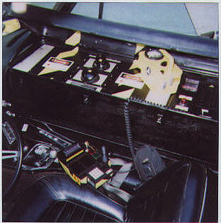
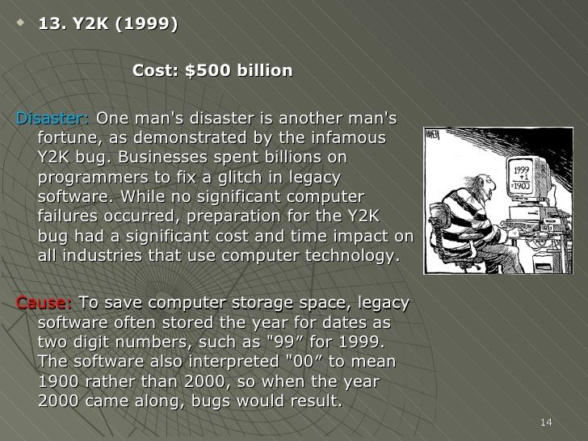
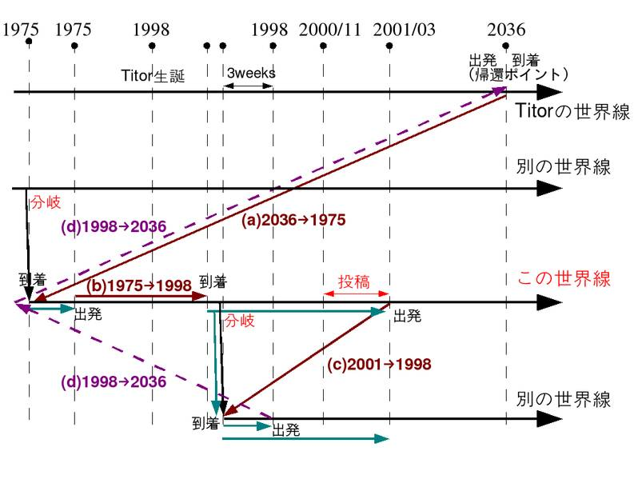

Let’s look at an admitted “time traveler”; a Mr. John Titor. Who claimed to utilize dimensional-egress to conduct apparent “time travel” activities to acquire and retrieve information and artifices from history.
Yes. He made claims to being a “time traveler”.
Important Warning
The information within this series of posts are speculative. I have no factual information if this John Titor is what he claimed to be. It is presented herein as the only (or maybe, one of the only) sources that claim to be associated with the vehicles that pop in and out of our reality from time to time.
He was, as far as I know, never associated with MAJestic in any way.
Introduction
So, let’s take a step backward.
Yes, let’s take a step backward and just imagine that you (the reader) had no idea of my experiences. You did not read what I wrote. If you did, you did not understand it, nor believe it. As such, you just dismissed it as garbage. Let’s work from that understanding; that everything that I have written and narrated, is just nonsense.
From the reader’s point of view; it is all just nonsense. It holds as much importance as the average length of a giraffes neck. It holds as much meaning and significance as the number of pencils that the Lusaka elementary school system goes through in a year. It holds as much relative importance to you, the reader as the number of yellow-sticky papers remaining on your desk.
It is nonsense because it has no bearing on your, the reader’s, reality.
But, what if it did? What if I composed a narrative that could become personal to your own personal life? What would it look like?
There are people that pop into our reality, and exit it. I have shown numerous examples of this. There are vehicles that drive into our reality, and then exit it, just as readily. I have shown examples of this as well.
With that in mind, let’s consider some questions. What are those disappearing vehicles and appearing people? How do they fit into the “grand scheme” of things?
One of the aspects that we looked at involved the use of vehicles to enter and leave our reality. They are not using the transport portal like I used in the Navy. They are doing something else altogether.
I have posts that show that people are doing this using walk-through technology.

I have posts that show that people are doing this with vehicles.
 As well as..
As well as..

Now consider that, for a second. If there are people entering and leaving our reality, and they are using an automobile as the vehicle to do so, then could there be some kind of disclosure that might present more information on this phenomenon? And, if so, then what would that disclosure looks like?
"Theories have four stages of acceptance: i) this is worthless nonsense; ii) this is an interesting, but perverse, point of view; iii) this is true, but quite unimportant; iv) I always said so. - J.B.S. Haldane, 1963
Well there is just such a disclosure.
There really is. However, it is a very difficult one to believe as it sounds so absolutely outlandish that it “must” be a hoax. (Not to mention that it has been “disproven” by Snopes (LOL), and is considered by many (people, children, and possibly animals) to be a hoax.)

Well, then, isn’t that a basic criterion for use to start from? We must look at what “just can’t possibly be” to study what actually is.
Dear readers, let me present the John Titor story.
This adventure down the “rabbit hole” begins in the middle of the Summer of 1998.
The First Fax
This is the first fax sent from John Titor to Art Bell on July 29, 1998;
“Dear Art, I had to fax when I heard other time travelers calling in from any time past the year 2500 AD. Please let me explain. Time travel was invented in 2034. Off-shoots of certain successful fusion reactor research allowed scientists at CERN to produce the world’s first contained singularity engine. The basic design involves rotating singularities inside a magnetic field. By altering the speed and direction of rotation, you can travel both forward and backward in time. Time itself can be understood in terms of connected lines. When you go back in time, you travel on your original timeline. When you turn your singularity engine off, a new timeline is created, due to the fact that you and your time machine are now there. In other words, a new universe is created. To get back to your original line, you must travel a split second father back, and immediately throw the engine into forward without turning it off. Some interesting outcomes of this are: One, you meet yourself. I have done it often, even taken a younger version of myself along for a few rides before returning myself to the new timeline and going back to mine. Two, you can alter history in the new universe that you have just created. Most of the time, the changes are subtle. Sometimes, I’ll notice car models that don’t exist, or books that come out late. The oldest one was a skyscraper that wasn’t built in a near favorite store of mine in New York. Interestingly, when you travel in time, you must compensate for the orbit of the earth. Since the time machine doesn’t move, you have to adjust the engines so you remain on the planet when you turn it off. Unfortunately, it was also discovered that anyone going forward in time, from my 2036, hit a brick wall in the year 2564. Everyone who has ever been there has reported that nothing exists. When the machine is turned off, you find yourself surrounded by blackness and silence. Now, most time travelers are trying to find out where the line went bad by going into the past, creating a new universe, and proceeding forward to see if the same thing results in 2564. It appears the line went bad around the year 2000. I’m here now, in this time, to test a few theories of mine before going forward. Now, for the future you might want to know about. One, Y2K is a disaster. Many people die on the highways when they freeze to death trying to get to warmer weather. Two, the government tries to keep power by instituting marshal law, but all of it collapses when their efforts to bring the power back up fail. Three, a power facility in Denver is able to restart itself, but is mobbed by hundreds of thousands of people and destroyed. This convinces most that maybe we shouldn’t bring the old system back up. Four, a few years later, communal government system is developed, after the constitution takes a few twists. China retakes Taiwan, Israel wins the largest battle for their life, and Russia is covered in nuclear snow from their collapsed reactors. Art, the reason I’m here now is because I believe a nuclear weapon set off by Iraq in the Middle East war with Israel might have something to do with the damaged timeline. I will test that theory and get back to you. Please pray that we discover the reason why there is no apparent future after 2564.”
This fax is what got the entire saga going.
Of course, there are always going to be others who will look for ever fault and problem with it. They will search and search. As such, some sleuthing internet investigators have found that this fax does not agree exactly with other information posted on the Internet.
This is a point that is not lost on others. They responded;
“Comparing the 1998 fax to the John Titor story that occurred a couple years later on the Internet, you can see that the “plot” changed somewhat. [Point #1] There’s no mention of an IBM 5100 in the 1998 faxes, and [point #2] in 2000-2001, there wasn’t any focus at all on this mysterious “blackness and silence” in 2564, nor any reference to a damaged timeline. Perhaps the mission changed. Or maybe just the story. It’s possible, even, that the author of the faxes wasn’t the same person, that someone else snatched up the story, made a few changes and ran with it. But that’s just meaningless conjecture. I’ll leave you with this final thought: something’s weird about this first fax. I’ve transcribed it directly from a recording of the originally aired episode. The line Art reads, “The oldest one was a skyscraper that wasn’t built in a near favorite store of mine in New York,” is fairly strange, not just for its content, but for its structure. It’s often reinterpreted as “The oldest one was a skyscraper that don’t exist in New York.” Now, we can obviously understand what the other interpretation means, but “wasn’t built in a near favorite store of mine in New York” is just weird. Perhaps it was a typo on the fax, or Art misread it. Some, however, theorize that the original recording was edited, that the original content was obscured to hide…something. Or, perhaps, to add something. There are rumors that the audio, for whatever reason, was changed, and so multiple versions are floating around cyberspace.”
The Second Fax
Here is the content of the second fax (1998):
“Dear Mr. Bell, I am glad you’re back. I faxed this information to you the day before you left the air. I wanted to make sure it wasn’t lost in the shuffle so I am sending a gift. If you’ve already seen this please accept my apologies. If you choose to make this public please do not publish the fax number. I had to fax when I heard the other time traveler calling in from the recent time past in fact the year 2500 Ad. Let me explain, Mr. Bell. I sent a fax with this opening on July 29 1998. As I said then I am a time traveler. I have been on this world line since April of this year and I plan to leave soon. Typically time travelers do not purposely affect the world lines they visit. However, this mission is unusually long and I’ve grown attached to some of the people I have met here. Anyway, for my own reasons I have decided to help this world line by sharing information about the future with a few people in the hope that it will help their future. I am contacting you for the same reason. Unfortunately there is no historical reference to your program in my worldline. I believe you can change your future by creating one now. Some of the information presented on your program may be invaluable to up-line researchers. I suggest you isolate the programs that concentrate on military technology and new physics theories. Transcribe these programs and put them someplace safe away from the box. I recommend someplace in the midwest. I also urge you to reconsider your paranoia to the Russians. They are not preparing for war with the average US citizen. They are preparing for war with the US government. They will eventually save this country and the lives of millions of Americans. I realize my claims are a bit difficult to accept so I will send the following once I know you have received this fax. A few pages from the operations manual of my time machine. And a few colored photographs of my vehicle. If you wish to contact me I will be happy to share with you the nature of time, the physics of time travel and some of the events of your future. Please send a return package to…”
The webpage that posted this information explains;
“Two years later, on November 2, 2000, someone using the handle TimeTravel_0 would arrive on the Internet, explaining the particulars of a working time machine. Later, he’d pop up on Post to Post, Art Bell’s BBS forum, and the world would learn the name John Titor.”
Introduction
For the record, I initially found it difficult to believe this story.
I read the reviews and opinions online. To me, at first glance it seemed like a lying blogger who as a libertarian (Not that it is bad, just saying.) , just carried on a dialog with other bloggers regarding a “what if” scenario; to look at the world that evolves around them and look at it through the eyes of a dimensional-traveler.
Even though I was, more or less, involved in a (remotely) similar position or role, I could not sympathize with him at all.
None of my exercises, missions, or tasks resembled anything that he was describing or related to. Precisely because they did not fit into the “reality” that I was involved in, I discounted what he said without further thought. I, like, many (I am sure) dismissed the entire event sequence as a fraud.
What does not fit within our reality is often dismissed as fraudulent.
At that time, I thought (erroneously) that there was only one (soul focused) world-line, and only one (shared) reality, and as such there was only one way to traverse world-lines. That was my understanding back in the day. That was then.
This is now. Now, I “hold” things in a better perspective, and that knowledge has reshaped my understanding of the “John Titor” case.
My thoughts at that time were very conventional. I believed that we all participated in and shared the one “only” reality. (Just like you, the reader, probably believe right now.) Later on, I was able to understand the concept of “individual realities” and quantum shadows. As part of this understanding came the realization that with multiple “true” realities came multiple types of world-line travel. Which then meant that there could be visitors to my current cluster of world-lines as I could visit others as well. Additionally, they could just as well be part of different organizations, and using different technologies and systems (some more advanced or less advanced than others).
At that time, I dismissed all information about John Titor as a fraud. I dismissed it at that. The opinions of others, further convinced me that it was simply a fraud and a hoax.
I forgot about it. Life moved on. Years passed.
However, something kept nagging at me. The information that they presented to me seemed confusing. For a “simple” Internet hoax, the connections did not make sense.
Later, I noted that there was something very odd. No matter how hard I searched, I was just unable to find any kind of detailed, or total replication of his dialog. Oh, sure, I found snippits. I found some small quotes. I found summaries. But I was unable to find the complete transcript. And, that to me, was worrisome.
What was worrisome was that there were websites after websites discussing how the John Titor event was a fraud. It was a Hoax.
It was proven. It was discovered. It was investigated.
Yet, the actual hard-copy dialog; the full transcript of his narrative was missing. How could they come to this conclusion without the full transcript? And, further, why didn’t they post the full transcripts in their narratives. They only posted their conclusions, expecting the reader to agree with them on blind faith.
Which is exactly what the John Titor disclosure was all about. Curious. Very, very curious.

What? That is correct. How can something be disproved, and identified as a fraud, if the actual transcripts of his discussions are lost? What, in the heck, do the debunkers make their arguments upon?
Well, we do know, and it is covered elsewhere in my blog, that most “investigative” and “fact check” websites are funded by political interests, who use them to create a new and revised narrative that fits their agenda. Most of what they come up with are opinions provided with supporting (hand picked) “evidence”. I managed to find complete transcripts of the John Titor saga. They were salvaged and propagated on the Internet sometime in 2014. Reader take note: The dearth of information regarding this is caused by misdirection by the largest American search engines such as Google, and Bing. However, I managed to find them using non-American search engines.
One thing that I do know is that the reality that we exist within is far more complex, colorful and interesting than our minds can grasp. Additionally, I KNOW that there are powers, forces, groups of people, individuals and trends that desire to keep the baseline of reality secret from the vast majority of humans. The failure to find a complete transcript was very suggestive of a disinformation effort.
Therefore, there just MIGHT be something to this story if one were to suspend their belief censors…
Over the years, I have connected various pieces together in regards to what I experienced, and what I know, with what has been reported by John Titor. Could he be like me, but associated with another organization, from another place and time? Sure, the technology in one dimension such as a television can be present in another dimension. Could not Dimensional-travel portals and equipment? Of course it could. So, everything else aside, I for one (now) believe his story. No, it is not the same as mine. No. I was not part of the same organization and system. But, what I do know absolutely makes his story plausible. I present this to the reader as a plausible explanation for various events within our reality.
As such, I present his story.
I present it with all the blemishes that I was able to collect, and place my commentary (as someone who was engaged in something similar) alongside it. This is not supposed to be a technical exercise in how to build a dimensional portal, or time machine. Nor is this supposed to be a scientific exploration into the sciences involved.
This is just a playful romp into the disclosure of someone who appears to explain a number of the mysteries that confound many people today.
John Titor, Time Traveler
John Titor is the name used on several bulletin boards during the time period from 1998 to around 2001 by a poster claiming to be a time traveler from 2036. In these posts, Titor made numerous predictions about future events, some vague and some quite specific, starting with events in 2004.
His earliest post was in the summer of 1998. He placed a fax to Art Bell suggesting that he transcribe his show and place them in a safe location so that in the future others might be able to enjoy his shows.
He claimed that he travels in and out of time via a special device that he places inside of a vehicle. Each time he travels in time he actually enters an alternative world-line.
John Titor showed up 01-27-2001 12:45 PM on an online forum (in our world-line) with the username Timetraveler_0. He claimed the following:
"I am a time traveler from the year 2036. I am on my way home after getting an IBM 5100 computer system from the year 1975."
There are many, many websites and links discussing this interesting person / event. I would suggest a 55 minute long video on You-Tube which seems to offer a very complete and comprehensive introduction to the entire John Titor saga. It can be found here;
- Oliver Williams – The John Titor Story
“Oliver Williams is the website editor for the time travel story of John Titor. He first saw John Titor's internet postings in the fall of 2002. After reading many of the sites where John was discussed, it amazed Oliver as to how much polarization and confrontation John's posts caused. Oliver soon realized that part of the problem was that there was no one place where all the posts could be easily seen. In early 2003, Oliver gathered the posts that John had left online and edited them into a single web site. The website also contains email and news events that point to subjects John spoke about. Oliver doesn't know if John Titor was a real time traveler or not, but, he says, what still amazes him about the posts is their ability to draw you in, question your sanity for thinking it might be real, and then scare you to death after seeing events unfold as John had said.”
Time Travel
The machine that John Titor refers to as a “Time Machine” is actually a “Dimensional Displacement Machine”. This device can place a person in other “world-lines” at other dates and times.
Due to the size of the unit, it is not portable. It is heavy, weighing about 500 pounds. It is too large to place in a backpack. Thus, either there has to be fixed “brick and mortar” structure to house the machine, or some other more mobile platform instead. John Titor states that the solution that his agency uses on the world-line that he is from is to move the device inside (preselected period) automobiles.
He stated that the technology that he utilized required that the vehicles remain in place and immobile. Thus, even though the displacement mechanism was placed inside a destination (historical period) vehicle, that vehicle had to remain immobile during operation.
Dates and Parameters
Assuming his story is correct, John Titor entered our world-line for personal reasons to visit his parents who had suffered greatly when he was a child. He entered our world-line in June 1998 and met his parents when he was only two years old. He met himself (as a two year old), his mother and his father. He moved in with them, and lived with them.
During this time (as I understand it to be) he was (somehow) involved in preventing a nationwide catastrophe known as Y2K that initiated civil strife in his world-line.
He stated that he came from a world line that was 1% to 2% in divergence from our world line.
(John Titor says 1 -2% difference. However, his world-line divergence was actually 2 to 3%. It’s a subjective comparison. I posit that the machine might calculate the relative similarities in a value percentage of say 1 to 2% prior to his entry onto that world line, however, the moment he materializes on the world line the percentage automatically jumps up. It would not be unrealistic to suppose it be at least a 2 to 3% at the initial point of arrival, and increase exponentially (not linearly) the longer he stays on the world-line.) In other words, the target divergence was 1-2%. Upon arrival, the world-line is now 2-3% upon arrival, and over time increases proportionally. The increase is a function of his interaction upon the new destination world-line.
He claimed that due to the similarities in our two world lines that our future would be similar to his. In his future, an event known as Y2K causes serious civil disruption. Eventually this disruption resulted in nationwide civil war, and then eventually global nuclear war.
Important note; it was not Y2K that caused the civil strife, as what many people interpreted his writings to mean. Rather, Y2K was a trigger that instigated a number of civil disruptions that occurred at that time. These disruptions set off a chain of events that eventually created a situation where the civil strife weakened the United States. As such, the United States was primed to a point whereas World War III was initiated.
He wanted to protect his parents, who suffered in his world line, by eliminating the Y2K catastrophe. When John Titor was young the federal police started to search houses and take people. It must have been a difficult time, as he and his parents packed up and moved to the country.
Important note that time when John Titor was making his posts, there was no DHS. Today we know the "federal police" as the Department of Homeland Security or DHS. It's one of those often overlooked aspects of the John Titor disclosure. If he were to say "the DHS", not one person in 1998 or 2001 would know what he was referring to. So, he called them what they were; "federal police".
They apparently had seen strife, as John related how he was always on the run and in hiding during the civil conflict years. So while, his parents did not die during the civil war, their life was very difficult. He was a member of the militia that was busy fighting the DHS; the “federal police”.
John came back to create a new world-line (we have to suppose) for personal reasons, to have his parents move to a more stable area that is shielded from much of the conflict that his world-line parts (and himself) experienced.
However, by interfering in our world-line, he altered our divergence from his world-line.
What was once 1-2%, became 2-3% upon arrival, and after one or two years, entered maybe 5-6% deviance!
The subsequent conflicts of Y2K were avoided. Thus, he preserved his parents’ living standard. However, he also prevented the Y2K civil strife, the resulting civil war four years later, and the global nuclear conflict a decade after that. We are thus living in a substantially altered world-line from the one that he entered.
Here is where things get a little complicated. Both I, and this John Titor both claim that there was to occur a “major” disruption around the 1995 to 2004 time period. John Titor claims that it was related to (what I consider to be a hoax, or dud) the Y2K event. He has thus “taken credit” in forestalling any disruption in accordance with his actions. I, on the other hand, state that indeed there was a buildup of forces and events that were reaching a climax in this time period. I do not know the specific details of it. I do not know if it was to have been triggered by Y2K, or if that event was to be a symptom of a much more elaborate realignment sequence. What I do know is that I, and Sebastian, and a handful of a few others have effectively “locked down” and secured the world-lines into a stable configuration based on our personalities and training. If there was, anything that our personalities generated it was [1] a rapid increase in prosperity during the 1980’s up to 2004. American culture, always a roller-coaster ride at best, was [2] pretty stable with [3] traditional family values and a [4] more or less traditional concept of beauty and value. This lasted until we were all retired in 2004 - 2006 time period. MAJestic disbanded our program and let the various forces continue unabated. How did the John Titor actions affect the group collection of world-lines? It is hard to say. In my mind, it was more tactical than strategic. He caused a change that altered a course (direction vector) of (relative) apparent history, but he did not affect culture and mass humanity (group) thought. He altered a time-line for personal reasons, and then abandoned it for his own home world-line. Those of us who are on "bundled" world-lines so connected are now living in this constructed reality that he himself influenced.
There is no question that he altered the future destiny of our world-line. He did this in two major directions;
- By working (somehow) to publicize and promote the avoidance of the Y2K event.
- By staying on this world line for an extended period of time.
By his own admittance, the longer a traveler stays in a given world-line, the greater the divergence. Thus for a typical mission a few days might be required. However, he was involved in our world line for a little over two and a half years actively engaged in preventing a major catastrophic event.
The trends that we are witnessing at this time have not changed, but the nature of what they manifest as has.
He worked in this capacity until the Y2K task was completed. Once completed, he went online for a short period of time in January 2001 and announced that he was a “Time Traveler”. He did this knowing that no one would believe him, so he felt safe in doing so.

Of course, we all “know” that Y2K was a big “nothing”.
Or, was it?
Once he was confident that his parents were safe, he left our world-line. As he still had a mission to complete. His (supposed) mission was to obtain a IBM computer from 1975 and return it to his world-line in 2036. He then left and has not been heard from since.
Suggestions of a Disinformation Effort
Actual and real or a hoax?
It’s impossible to prove. However, one can look to see if there are any efforts to render his claims are false. You generally do not need to do so with most actual hoaxes. They fall apart on their own.
The first thing to look for is the actual evidence. How difficult or easy is it to find full transcripts of his dialog? Remember, real disclosures tend to evaporate over time. Photos become harder to find. Small, heavily pixillated versions replace the HD versions. Actual transcripts disappear.
At this, was my first sign that there just might be something to this story.
No matter how hard I looked, I could not find the actual full transcripts. All I could find was a series of You-Tube videos reading the transcription (included herein).
(Undated update. In 2014 groups of bloggers gathered and collected transcripts and placed them on various websites. Unfortunately, Google and Bing have a difficult time locating these websites.) You need to use non-American search engines, or refer to my blog. LOL.
Another one of the best indications of a comprehensive disinformation effort is whether or not Hollywood, television, media, music, music video productions, or something related is involved. After all, [1] the C.A.R.E.T. disinformation protocol resulted in a music video and CGI graphics. The [2] suppression of the release of the <redacted> extraterrestrial photos resulted in a documentary with extensive FX work and CGI animations. And, of course, [3] let’s not forget all the mention of S4 from the John Lear disclosures that found their way into Hollywood…
Well, it seems that Hollywood has embraced John Titor as well.
Titor’s name appears first in the first episode of the series “Steins;Gate”. In the show, character Okabe Rintarou accuses Doctor Nakabachi of stealing John Titor’s time-travel theories. Nakabachi’s machine uses the same principles as the one described by Titor in the year 2000, so Rintarou, a fairly big Titor fanatic, recognizes it right away.
Or, maybe it’s just a coincidence.
One thing is for certain, Hollywood certainly likes the idea of using an automobile as a time travel vehicle. After all, that was the basis for the “Back to the Future” series of movies.
Additionally, why are some individuals so fixated on disproving him?
Why is it your personal mission to disprove John Titor? Just curious why you put so much time into it? Not knocking you down just wondering -dandeville81 I know, right?! Instead of living his own life. hell, if John Titor was a hoax, then he himself put less effort and time into the hoax than this guy has debunking it! haha -Jon Lee
So, what is this? A hoax, a promotional effort for a video-novel, a disinformation effort to suppress some kind of information release or just a series of coincidences? I do not know.
However, for the record, based on my experiences I do believe him.
The John Titor Mission
The original John Titor from the years 1998 (by some accounts 1999) through 2001 claimed to be a soldier from the year 2036, sent to 1975 to retrieve an IBM 5100.
This computer, developed by IBM could use an IBM proprietary language, that he needed to prevent the 2k38 Bug and debug some legacy computer programs.
This early computer could translate between various computer languages including Basic, APL and UNEX. Which curiously I also know. Not so much of a coincidence as it is due to my age. These were the languages that were taught at my university when I went to school. My first computer language that I learned was APL.
Our world-line visit was not part of his primary mission. It was a stop-over.

John Titor claimed to be in the year 2000 for “personal reasons”, as visiting his family and recovering photos lost during the civil war. He also claimed to be selected for this mission because his grandfather was directly involved in the creation of the time machine.
First of multiple Posts
This post is the first of a series of posts related to John Titor. The other posts are;


Conclusion
Our reality is not what we think it is. I am not the only person who has disclosed that there are others, and other organizations that can enter and leave our reality at will. Another person who made this claim went by the name John Titor.
Only where as, I claim to be part of MAJestic and was employed as part of human sentience management, John Titor claimed to be a person who was part of another world-line. Together, we both claim that the MWI is real, and we utilize it to perform dimensional egress for our own purposes.
- I claim that it is a tool that is used to manage human sentience evolution.
- John Titor claims that he utilized the time variable to conduct acquisition activities in the past.
He claimed that on that world-line, the United States was fundamentally different after a rapid series of events in the late 1990’s. He claimed that he needed to perform some acquisition of certain technical devices through the use of the time-variance option in dimensional travel.
This is a multi-part post.
Take Aways
- John Titor claimed to be a time traveler.
- He utilized dimensional travel to move in and out of the baseline reality.
- As such, he visited our world-line to acquire some technology needed on his world-line.
- That technology was produced in “our” past. Thus the idea that it involved “time travel”.
MAJestic Related Posts – Training
These are posts and articles that revolve around how I was recruited for MAJestic and my training. Also discussed is the nature of secret programs. I really do not know why the organization was kept so secret. It really wasn’t because of any kind of military concern, and the technologies were way too involved for any kind of information transfer. The only conclusion that I can come to is that we were obligated to maintain secrecy at the behalf of our extraterrestrial benefactors.


MAJestic Related Posts – Our Universe
These particular posts are concerned about the universe that we are all part of. Being entangled as I was, and involved in the crazy things that I was, I was given some insight. This insight wasn’t anything super special. Rather it offered me perception along with advantage. Here, I try to impart some of that knowledge through discussion.
Enjoy.


MAJestic Related Posts – World-Line Travel
These posts are related to “reality slides”. Other more common terms are “world-line travel”, or the MWI. What people fail to grasp is that when a person has the ability to slide into a different reality (pass into a different world-line), they are able to “touch” Heaven to some extent. Here are posts that cover this topic.


John Titor Related Posts
Another person, collectively known by the identity of “John Titor” claimed to utilize world-line (MWI egress) travel to collect artifacts from the past. He is an interesting subject to discuss. Here we have multiple posts in this regard.
They are;